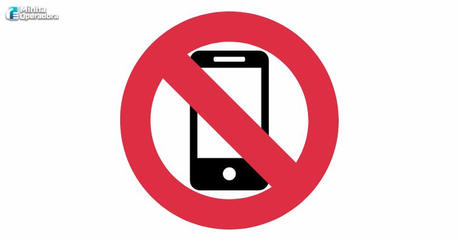

Vou compartilhar conhecimentos sobre tecnologia e programação

Uso de celulares é probido em diversas escolas
Por: Erika Jaskulski
O uso de telefones celulares e aparelhos eletrônicos portáteis pessoais está proibido nas escolas públicas e particulares do Paraná. A restrição é válida para todas as etapas da Educação Básica e abrange não apenas o horário das aulas, mas também os recreios, intervalos e atividades extracurriculares. Os dispositivos pessoais só podem ser utilizados com autorização prévia para finalidades estritamente pedagógicas ou por motivos de acessibilidade e saúde.
Guns N' Roses faz história com turnê de estádios pelo Brasil em 2026
Por: Erika Jaskulski
O Guns N’ Roses sacudiu o Brasil em abril com uma megaprodução da Mercury Concerts. Axl Rose, Slash e Duff McKagan lotaram arenas de norte a sul, incluindo praças fora do eixo tradicional como Belém e São Luís. Mesmo sem a tecladista Melissa Reese, ausente por motivos pessoais, a banda entregou shows com mais de três horas de clássicos. Após o sucesso em solo brasileiro, o grupo segue atualmente com a turnê lotando estádios na América do Norte neste mês de agosto.
Meu primeiro post
Por: Erika Jaskulski
A famosa adaptação de 2001 do Sítio do Picapau Amarelo estreou no Globoplay em 27 de julho de 2026. As primeiras quatro temporadas estão disponíveis no streaming com acesso gratuito, mesmo para quem não é assinante.Onde Assistir e CronogramaGloboplay: As temporadas de 1 a 4 da versão dos anos 2000 já estão no ar.Continuação no Globoplay: As temporadas restantes (5, 6 e 7, que vão de 2005 a 2007) chegam à plataforma em outubro de 2026.Outras versões: O serviço também conta com conteúdos de outras épocas da clássica obra baseada nos contos de Monteiro Lobato.A atriz Isabelle Drummond, que interpretou a boneca Emília nessa fase de sucesso, celebrou o retorno da série para que novas gerações e fãs nostálgicos possam acompanhar as histórias do Sítio da Dona Benta.Um vídeo nostálgico relembrando a chegada da clássica série ao streaming:56sSÍTIO DO PICAPAU AMARELO on GLOBOPLAY1,2 mil visualizações · há 15 diasYouTube · canal OLICSe quiser, posso te ajudar com:O elenco completo de cada temporada da versão de 2001.A ordem das histórias baseadas nos livros de Monteiro Lobato adaptadas na série.Como você prefere prosseguir?As respostas da IA podem conter erros. Saiba maisInstagram·SuplaSupla on Instagram: "E aí, champs! ️ Vocês sabiam que ...Olha que cena, acontece de tudo aí. De tudo tá acontecendo. O Supla é o Elvis. Elvis McCartney. Elvis McCartney. Ohhh! Ohhh! O que...0:30GshowIsabelle Drummond celebra estreia do Sítio do Picapau ...Isabelle Drummond encara desafio e dubla Emília, do Sítio do Picapau Amarelo. Para Isabelle Drummond, que deu vida à irreverente E...InstagramO Sítio está de volta à TV Globo! Mas atenção - InstagramO Sítio está de volta à TV Globo! ✨ Mas atenção: desta vez, o retorno acontece na TV Globo do exterior, por meio do canal Globo On...Mostrar tudocrie um resumo sobre esse assuntoO Sítio do Picapau Amarelo (versão de 2001) estreou no Globoplay em 27 de julho de 2026. A chegada da produção faz parte do resgate de clássicos da TV Globo.Principais Pontos do ResumoAcesso gratuito: As primeiras quatro temporadas já estão disponíveis para todos, mesmo sem assinatura paga.Próxima liberação: As temporadas de 5 a 7 (anos de 2005 a 2007) chegam ao catálogo em outubro de 2026.Impacto cultural: A atriz Isabelle Drummond (eterna Emília) celebrou a estreia, destacando a oportunidade para novas gerações assistirem à obra de Monteiro Lobato.Para aprofundar seu resumo, posso te enviar:Os principais episódios dessas primeiras temporadas.Detalhes sobre os direitos autorais da obra de Monteiro Lobato.Informações sobre a versão de 1977 também disponível.Qual desses pontos você quer incluir?As respostas da IA podem conter erros. Saiba maissem topicos por favorO Sítio do Picapau Amarelo de 2001 estreou no catálogo do Globoplay em 27 de julho de 2026 como parte do projeto de resgate de clássicos da televisão. Atualmente, o público já pode assistir gratuitamente às quatro primeiras temporadas da série, precisando apenas de uma conta cadastrada na plataforma, sem a necessidade de uma assinatura paga. A liberação do restante dos episódios, que engloba as temporadas de cinco a sete produzidas entre 2005 e 2007, está programada para acontecer em outubro de 2026. O retorno da produção foi celebrado pela atriz Isabelle Drummond, a eterna boneca Emília dessa geração, que destacou a importância de apresentar a clássica obra de Monteiro Lobato para os novos espectadores e de saciar a nostalgia dos fãs antigos.
Meu primeiro post
Por: Erika Jaskulski
Boas-vindas ao meu novo blog! Aqui vou compartilhar dicas de programação e curiosidades da área de
tecnologia.
.jpeg)
.jpeg)
.jpeg)